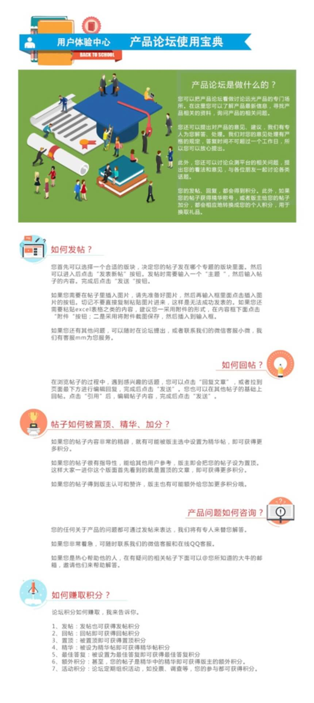

如何快速获得用户真实体验感受？
公司主要做TO B产品，加之又是集团财务软件。产生问题是：真实用户的产品体验感受，总很难直接的反馈给我们。通过实施同事、或研发线同事获得的信息是往往是滞后、不准确的。我们迫切想了解用户最主观的感受，以开放的心态希望听到更多的声音。所以为了平衡业务和体验的关系，就孕育了这个用户体验中心的网站，我们希望用户可以真正通过这个平台驱动整个研发的模式，创造更有价值的产品，提供不一样的服务。
所以关于网站的基本目标是：通过互联网思维模式结合服务设计思维打破当前存在的隔阂，通过设计方法重新组合用户行为从而更快更强为企业创造更有影响力的价值。
Before design
Research
1、如把网站看作是一种服务的过程。可简单梳理服务蓝图如下：
通过这个图可对用户在参与体验过程中的整个网站涉及到的前后台接触点获得整体的认识。但分析后，发现这种展示下两两要素的展现较为单一。如测试任务实际中分为需审核和无需审核两类，再比如人工这个要素又可以细化为三个角色：任务发布人、任务审核人和结果评定人。
2、为深入了解，针对众测模块下从发布任务到审核、领取、提交和评审的核心环节梳理众测流程图如下：
注：任务1表示无需审核的任务包括问卷调查类，任务2表示需要审核的任务包括产品测评、产品找茬。
通过分析，发现这个流程图能解决的只是一个角色参与过程中的情况。面对众多环节流程，需要的是能把所有角色相关联的点串起来的展现形式。
实际有四类角色参与其中
3、由于整个过程参与角色众多，为保证多场景下，我们的整个流程是通畅的，符合用户期待，满足业务要求，绘制生态图如下：
让用户测试反馈变得快捷简单
论坛管理
作为超级管理员。发布了一份版主工作指南和一份使用宝典。
遇到新问题？
1.0版本推出的时后，没有考虑实际客观因素，因为实际上遇到问题了，都是当用户在使用正在使用系统的时候，这时如果没有提供快速便捷的反馈途径，比如支持在财务管控页面上直接有入口进行反馈或提供移动端反馈等等。仅仅是领取测试任务或是在论坛里发布问题，这种反馈就不够快速不够迅猛，没有紧抓住用户的需求。于是就有了2.0的改版计划，经过用户调研后，画出了下面的2.0任务流和页面流程的线框图。目前处理开发阶段。

众测的初衷是为用户解决问题，就跟设计的初衷是一样的。作为一个设计师永远不要忘记在心里问自己“我的产品为客户解决了什么问题，怎么解决，对客户的价值是什么”，不管什么领域什么平台的产品，都会更容易找到答案。做交互学习到的是一种思维能力，而这种思维能力是变通的，接触到一个大的项目后，无论承担的任务是运营还是策划，其实只要深入思考，去挖掘，就会发现其实背后的核心道理都是相同的。
接触这个项目还是挺能锻炼人的，学习了好多关于运营和网站的知识。写文案，管理微信号，当客服，日常维护礼品上新换BANNER，制作VIP卡，论坛每天管理员回复反馈什么都会涉及。在网站快上线的日子，每天都在倒计时，团队每天早上都会开站会，大家一起构思提各种关于存活，拉新的好点子，总之就是想尽办法吸引用户参与。做活动的时候，和整个团队的人一起互相配合，安排了任务绝不推脱，想办法进行推广，想办法在用户的角度制造更多吸引的点。